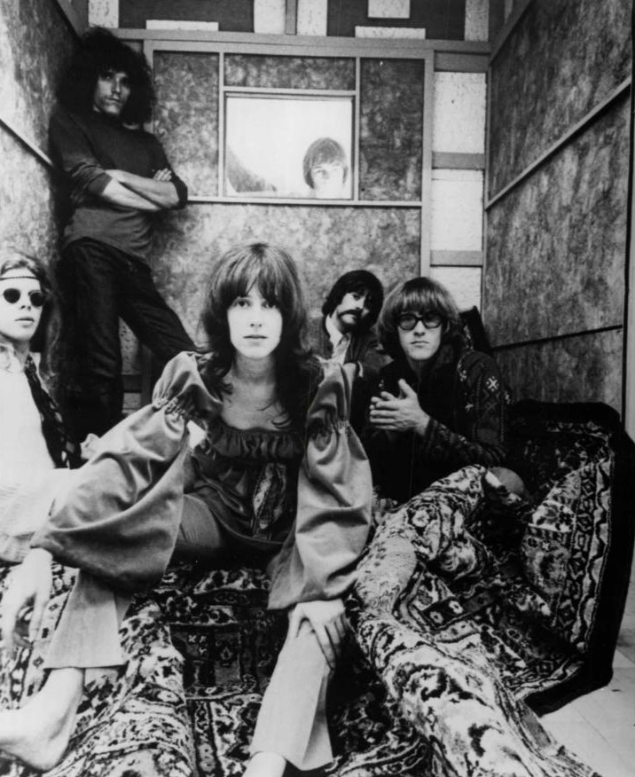

Psychedelic rock set out to make a record sound like a hallucinogenic trip felt.
Fuzz pedals, backward tape, sitars, and feedback replaced the tidy three-minute pop single.
The sound only lasted a few years, but it permanently rewired what a rock band was allowed to do in a studio.

Table of Contents
- How Psychedelic Rock Got Its Name
- Two Scenes, One Sound: San Francisco and London
- The Studio Tricks That Built the Sound
- The Bands That Built It
- The Short Reign and the Long Shadow
- FAQ
How Psychedelic Rock Got Its Name
Psychiatrist Humphry Osmond coined the word "psychedelic" in 1956.
He used it to describe the effects of mind-altering drugs like LSD.
It took another decade for a band to attach that word to a genre.
The Austin, Texas group The 13th Floor Elevators printed "psychedelic" on their business cards in January 1966.
That June they released The Psychedelic Sounds of the 13th Floor Elevators.
It was the first record explicitly marketed under that name.
A Sound Already Underway
The label arrived after the music itself already existed.
The Byrds released "Eight Miles High" in February 1966.
Its droning guitar solo borrowed from Indian ragas and free jazz.
That single grew directly out of the jangly experimentation of folk rock, the genre The Byrds had helped invent just months earlier.
The Beatles released "Rain" that same spring, a Revolver-era B-side.
It ran vocals and guitars backward through the tape machine.
Both songs came out months before anyone had settled on a genre name.
Two Scenes, One Sound: San Francisco and London
San Francisco's Haight-Ashbury neighborhood became ground zero starting in 1965.
Author Ken Kesey's Acid Tests were LSD-fueled parties built around live music.
They drew in bands like the Grateful Dead and Jefferson Airplane.
Venues including the Fillmore, the Avalon Ballroom, and the Matrix nightclub built shows around liquid light shows.
Extended improvisation was the point, not the exception.
By the Summer of Love in 1967, Haight-Ashbury's population had swelled from around 15,000 residents to roughly 100,000.
The Human Be-In that January had already drawn thousands to nearby Golden Gate Park.
San Francisco's Acid Rock
The West Coast strain leaned harder and louder than its British counterpart.
Critics later called it acid rock.
It was built on long instrumental jams and album-length statements rather than three-minute singles.
Jefferson Airplane's Surrealistic Pillow came out in February 1967.
It carried the sound into the mainstream with "White Rabbit" and "Somebody to Love."
The Doors formed in Los Angeles rather than San Francisco.
They brought a darker, more theatrical edge to the same movement.
"Light My Fire" became a number one single that summer.
London's Studio Psychedelia
Britain took a more whimsical, art-school route.
London's underground clubs, including the UFO Club and Middle Earth, hosted early shows by Pink Floyd.
Those shows were built around Syd Barrett's surreal songwriting.
Pink Floyd's 1967 singles "Arnold Layne" and "See Emily Play" leaned into Victorian whimsy rather than West Coast sprawl.
The Beatles, The Rolling Stones, and The Who all took turns experimenting with the sound too.
None of them fully abandoned pop song structure the way American bands often did.
It was a habit many acts that came up through the British Invasion carried into their later, stranger records.
The Studio Tricks That Built the Sound
Fuzz pedals, wah-wah, and guitar feedback gave the genre its signature texture.
Producers layered backward tape, tape loops, flanging, and extreme reverb onto songs.
New four-track and eight-track machines made that layering possible.
Producer George Martin pioneered many of these techniques in the studio.
His most famous example is "Tomorrow Never Knows," from Revolver in August 1966.
Song structures got stranger too.
Unexpected key changes and time signature shifts replaced the standard verse-chorus pattern.
Sitars, Ragas, and the Mellotron
Eastern instruments crossed into rock recordings for the first time.
George Harrison introduced the sitar into a Western rock recording on the Beatles' "Norwegian Wood."
That song came from Rubber Soul, released in December 1965.
Sitar virtuoso Ravi Shankar had spent a decade bringing Indian classical music to Western audiences before that.
His influence fed directly into that borrowing.
The Beach Boys' Pet Sounds, released in May 1966, added one of the first theremin-like sounds heard on a rock record.
Keyboard instruments including the Mellotron, an early tape-based sampler, gave British bands an orchestral wash.
No orchestra had to be hired to get it.
The Bands That Built It
No single band owns the era.
A handful of acts defined it on both sides of the Atlantic.
- Jefferson Airplane, San Francisco's commercial breakout act, fronted by Grace Slick
- The Grateful Dead, whose live shows were built almost entirely around extended improvisation
- The 13th Floor Elevators, the Texas band that gave the genre its name
- The Doors, led by Jim Morrison's theatrical, drug-referencing lyrics
- Pink Floyd, Britain's leading art-school act under Syd Barrett
- Cream, pairing Eric Clapton's guitar work with extended blues-based jams on tracks like "White Room"
Landmark Records
A handful of albums mark the era's high points.
The Beatles' Sgt. Pepper's Lonely Hearts Club Band came out in May 1967.
Critics widely recognized it as the first commercially successful genre landmark.
Jefferson Airplane's Surrealistic Pillow and Pink Floyd's The Piper at the Gates of Dawn both followed within months of it.
Strawberry Alarm Clock's "Incense and Peppermints" and Steppenwolf's "Magic Carpet Ride" carried the sound onto Top 40 radio in 1967 and 1968.
The Short Reign and the Long Shadow
The commercial peak lasted barely two years, roughly 1967 through 1969.
The Monterey Pop Festival in June 1967 put the West Coast sound in front of a national audience for the first time.
Jimi Hendrix and Janis Joplin both broke through that same weekend.
Woodstock followed in August 1969, already closer to the end of the movement than its beginning.
Both the United States and the United Kingdom outlawed LSD before the decade closed.
That cut off the drug culture the music had grown up around.
What It Left Behind
The sound didn't disappear so much as scatter into new directions.
Progressive rock bands like King Crimson picked up its longer song structures and studio ambition.
Early heavy metal borrowed its distortion and volume.
Krautrock groups in Germany pushed its droning repetition even further.
Decades later, acts from Nirvana to Tame Impala have pulled directly from that same playbook of fuzz, feedback, and studio experimentation.
Curious how this sound fits alongside the rest of the decade?
Start with The Beatles, whose own catalog traces a direct line from Merseybeat to Sgt. Pepper's.
Test your knowledge with the What's Your 60s Sound? quiz or the 1960s Music Trivia tool.
FAQ: Psychedelic Rock
What is psychedelic rock?
Psychedelic rock is a style of 1960s rock music built to mimic the experience of hallucinogenic drugs like LSD.
Fuzzed-out guitars, tape effects, and Eastern instruments like the sitar are its clearest signatures.
What was the first psychedelic rock song?
There's no single agreed-upon first song in the genre.
The Byrds' "Eight Miles High" and The Beatles' "Rain," both released in early 1966, are frequently cited as the earliest fully formed examples.
The 13th Floor Elevators were the first band to market their music under that name later that same year.
Which band is credited with naming psychedelic rock?
The Austin, Texas band The 13th Floor Elevators put the word psychedelic on their business cards in January 1966.
Their debut album that June was called The Psychedelic Sounds of the 13th Floor Elevators, the first record explicitly marketed under that name.
What's the difference between psychedelic rock and acid rock?
Acid rock usually means the harder, jam-heavy San Francisco strain, played by bands like the Grateful Dead and Jefferson Airplane.
The wider genre is the broader umbrella.
It covers that West Coast sound as well as Britain's more whimsical, studio-built variant.
Why did psychedelic rock decline?
The genre's commercial peak lasted only from about 1967 to 1969.
Both the United States and the United Kingdom outlawed LSD before the decade ended, cutting off the drug culture the music had grown around.
Many key bands, including Cream and the original Pink Floyd lineup, broke up or changed direction by the early 1970s.
Which bands defined 1960s psychedelic rock?
The Doors, Jefferson Airplane, the Grateful Dead, and The 13th Floor Elevators led the American side.
Pink Floyd, Cream, and The Beatles' later albums defined the British side.
Every band above left behind a catalog worth its own closer look.
The genre never lasted long, but few sounds packed as much studio invention into so few years.
Head back to the 1960smusic.net homepage to explore every other genre that shaped psychedelic rock's brief, blinding run.